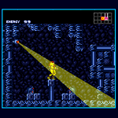
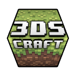
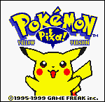

-
> What is ?
ninjhax 2.0 is a piece of software that allows you to run unsigned code on your 3DS. In practice, this means being able to run homebrew applications such as games, tools and emulators! Additionally, ninjhax 2.0 allows you to run many out-of-region gamecards, as well as use custom themes on your console. What's pretty awesome is that this runs on firmware version 9.9, the latest one.
To see it in action, look no further.
Please note that this is a beta, and therefore there are bugs that are still being ironed out. Mainly, this build of ninjhax 2.0 does not support sleep mode, so do not close your system while running homebrew or you will be forced to reboot it. Closing your system while running an out-of-region game is totally ok though.> What do I need to use ?
You need exactly three things to run unsigned code on your console :
> A 3DS, 3DS XL or 2DS console with a firmware version between 9.0.0-X and 9.9.0-X. X can be any digit.
> An SD card compatible with your 3DS (the one it comes with will of course do).
> A copy of the game CUBIC NINJA, either from retail or eShop.
(retail is available in US, EU and JPN; eshop was JPN-only)
> How do I run ?
1. Go to the get ninjhax section of this page and enter your console's firmware version.
2. Submit the form; you should get your very own ninjhax QR code.
3. Download the homebrew starter kit and extract it at the root of your SD card. Alternatively, you may choose to only download The Homebrew Launcher menu executable and place it at the root of your SD card. No matter what, after this step, you should have a file named boot.3dsx placed at the root of your SD card.
4. Make sure your 3DS's wifi connection is enabled and connected to the internet (this is important!).
5. Start CUBIC NINJA on your console, choose "Create", then "QR code", and finally "Scan QR code".
6. Scan the QR Code. This step might take a couple tries; make sure you fill up as much of your 3DS's screen with the QR code. If scanning the QR code returns to menu with an error, try a few more times.
7. Follow the on screen instructions. You may choose not to install the exploit to your gamecard's savedata, though doing so is not recommended.
8. OPTIONAL - once the ninjhax is installed to your gamecard, just go back to the "QR code" menu and it'll run automatically!
9. OPTIONAL - you can now run homebrew apps on your 3DS! Simply drag and drop application folders into the "3ds/" directory that was created on your SD card by ninjhax.
> Get
Select your console's firmware version (only select NEW if you are running this on a New 3DS (XL); regular 3DS, 3DS XL and 2DS owners should select OLD) :
> How do I write software for the 3DS ?
Our team (and many others !) has been tirelessly working on putting together a free, open source development kit for the 3DS. This takes the form of ctrulib, 3dsxtools and devKitARM. You can find more information on how to install and use these by clicking here.
> Who made ?
ninjhax was put together by a very passionate team of reverse engineers/hackers/enthusiasts, including:
- smea — 3DS research, core exploit code for all versions, ctrulib improvements, hbmenu code, testing/debugging
- yellows8 — 3DS research, ctrulib improvements, auditing, help with pretty much everything
- plutoo — 3DS research, ctrulib improvements, auditing, help with pretty much everything
- fincs — 3DSX format/code, ctrulib improvements, devkitARM integration, testing
- mtheall — ctrulib improvements, hbmenu code, testing
- GEMISIS — hbmenu code, testing
- Fluto, Arkhandar — hbmenu design
- Normmatt, ichfly — general help, testing
- case — javascript master
- lobo — webpage template
We'd all also like to thank everyone who has been contributing to the 3DS scene in one way or another, including (but not limited to) : StapleButter, neobrain, bunnei, Drenn, Bond697, sm, WinterMute, yuriks and, like, so many other people. -
> Homebrew highlights
> blargSnes
blargSnes is a SNES emulator currently being developed by StapleButter. It's open source, runs most games really well and has sound ! Better yet, StapleButter is actively working on it and it keeps getting better every day.
> 3DScraft
3DScraft, as its name indicates, is a 3DS adaptation of Minecraft. While it's currently little more than a basic version of creative mode, it holds great promise as it already has infinite worlds, saving/loading and stereoscopic 3D rendering.
> GameYob
GameYob is a Game Boy emulator currently being developed by Drenn. Much like blargSnes, it's open source, has sound and is in continuous development. It can run almost any game nearly perfectly and gives users a wide array of options to choose from.
-
> Frequently Asked Questions
> Where can I find more homebrew applications ?
You can visit 3dbrew for more homebrew applications.
> ninjhax won't run anymore ! I updated my console after installing ninjhax and I can't access the homebrew launcher anymore. What do I do ?
In this case, all you need to do is clear CUBIC NINJA's savegame and install the exploit again. To do so, enter CUBIC NINJA's main menu and hold L+R+X+Y; after a few seconds, a menu will show up asking whether you'd like to clear your savegame. Do it, grab the QR code for your new firmware version and you should be good to go!
> ninjhax won't run at all ! What am I doing wrong ?
This most likely means you are using the wrong QR code for your console/firmware version. Please double check that you are using the correct version. If the problem persists, let me know my sending me an email at sme@lum.sexy.
> Cubic Ninja says the QR code is invalid and nothing happens. What's wrong ?
This means there was an error on our side while compiling the QR code. Please send me an email including the firmware version you used to sme@lum.sexy so I can fix it ASAP.
> Can ninjhax be uninstalled ?
Yes. Go to CUBIC NINJA's main menu, hold L+R+X+Y and follow instructions. This will also erase your savegame. There is currently no way to uninstall ninjhax without losing your Cubic Ninja savegame because it seems noone cares enough about their Cubic Ninja savegame to make one.
> What are 3DSX files ? Why doesn't ninjhax load CXIs ?
We made the decision early on that ninjhax should only work with a highly relocatable executable format as a way to improve compatibility with potential future exploits, which may or may not include the ability to update virtual memory page permissions. 3DSX is a format developed by fincs which allows us to do just that; each section (.text, rodata and data) can be relocated independently, making it perfect for our needs. Compiling as 3DSX rather than CXI will help maximize future compatibility.
> Does this allow region free ?
It totally does and it's pretty rad. For more information on the region free feature, please visit regionFOUR's README page, as the exact same limitations currently apply.
> Does this let me run roms ?
No. ninjhax is a user mode exploit, meaning that we do not have full control over the console, and therefore cannot run pirated software. That being said, we have the same amount of access as regular apps and games to the console's hardware, and so we can make some kickass homebrew!
-
> Is safe ?
ninjhax has been tested thoroughly by a fairly large group of people over the course of several months. To our knowledge, running ninjhax has never resulted in damaging the console running it. That being said, we do not guarantee safety and will not take responsibility for your actions.
As in any computing context, you should always be careful that you trust the source of executables you run on your console. While ninjhax only allows user mode code to run, malicious intents may still be caried out through it. So please, don't be an idiot.